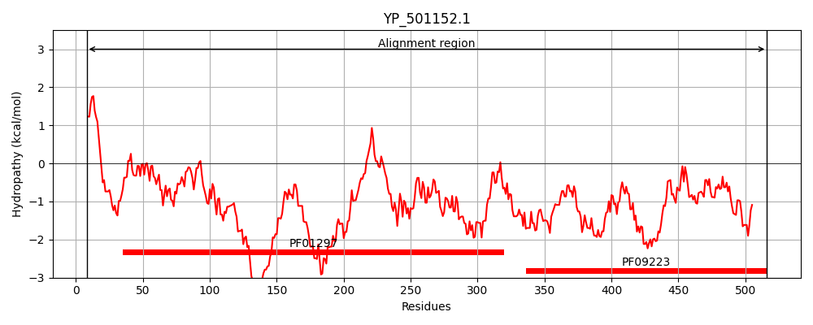
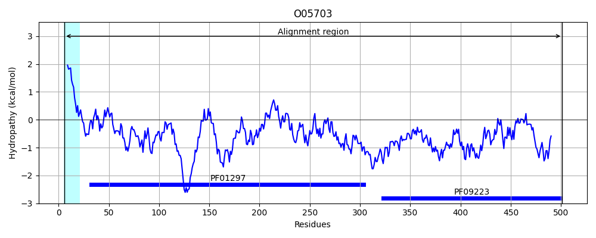
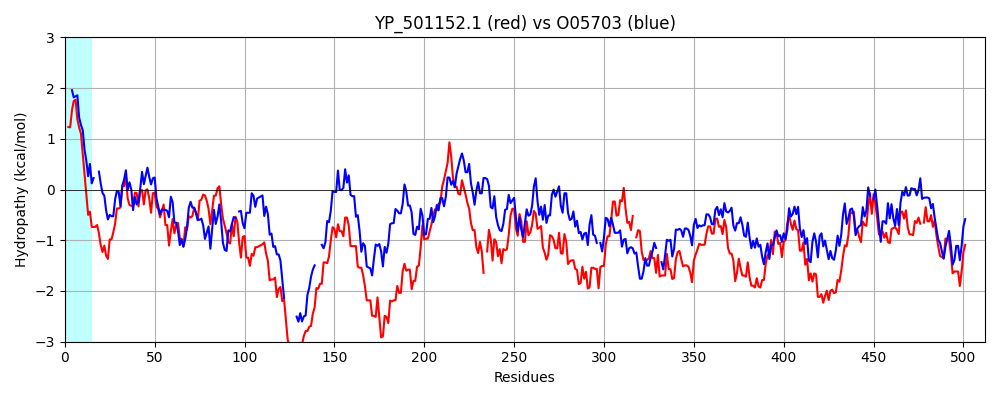

Hit Accession: O05703
Hit TCID: 3.A.1.15.3
Hit Description: gnl|BL_ORD_ID|6750 gnl|TC-DB|O05703|3.A.1.15.3 ADCA PROTEIN (FRAGMENT) - Streptococcus pneumoniae.
Mach Len: 512
e:0.000000
Query TMS Count : 0
Hit TMS Count: 1
TMS-Overlap Score: 0.000000
Predicted Substrates:CHEBI:10113;zinc(2+)
BLAST Alignment:
Score: 925 , Bit scores: 360 bits, E-value: 9.9e-120, Alignment length: 512, Percentage identity: 39
Query: 8 LLLVPAVTLSLAACGNDDGKDKDGKVTIKTTVYPLQSFAEQIGGKHVKVSSIYPAGTDLHSYEPTQKDILSASKSDLFMYTGDNLDPVAKKVASTIKDKDKKLSLEDKLDKAKLLTDQHEHGEEHEHEGHDHEKEEHHHHHGGYDPHVWLDPKINQTFAKEIKDELVKKDPKHKDDYEKNYKKLNDDLKKIDNDMKQVTKDKQGNAVFISHESIGYLADCYGFVQKGIQNMNAE-DPSQKELTKIVKEIRDSNAKYILYEDNVANKVTETIRKETDAKPLKFYNMESLNKEQQKKDNITYQSLMKSNIENIGKALDS-GVKVKDDKAESKHDKAISDGYFKDEQVKDRELSDYAGEWQSVYPYLKDGTLDEVMEHKAENDPKKSAKDLKAYYDKGYKTDITNIDIKGNEITFTKDGKKHTGKYEYNGKKTLKYPKGNRGVRFMFKLVDGNDKDLPKFIQFSDHNIAPKKAEHFHIFM-GNDNDALLKEMDNWPTYYPSKLNKDQIKEEMLAH 516
LLL L L AC N K DGK+ I TT YP+ F +Q+ G V + AGT+ H YEP+ K + +D F+Y +N++ K+ T+ DK K +++ D L + E G+ HDH +E HHH +DPHVWL P + I+D L P K+ +EKN + L+ +D + + + H + YLA YG Q I ++ + +PS L ++ + ++ + YI +E+N + + T+ KE K +ESL +E K Y S+M+ N++ + + D G ++ +KAE K + +GYF+D VKDR LSDYAG WQSVYP+L+DGT D+V ++KA+ K + + KAYY KGY TD+T I+I N + F + G+ Y+Y GKK L Y KGNRGVRF+F+ D D K++QFSDHN+AP KAEHFHIF G +AL +EMDNWPTYYP L+ +I +EMLAH
Sbjct: 6 LLLASLCALFLVACSNQ--KQADGKLNIVTTFYPVYEFTKQVAGDTANVELLIGAGTEPHEYEPSAKAVAKIQDADTFVYENENMETWVPKLLDTL-DKKKVKTIKATGDMLLLPGGEEEEGD------HDHGEEGHHHE---FDPHVWLSPVRAIKLVEHIRDSLSADYPDKKETFEKNAAAYIEKLQALDKAYAEGLSQAKQKSFVTQHAAFNYLALDYGLKQVAISGLSPDAEPSAARLAELTEYVKKNKIAYIYFEENASQALANTLSKEAGVKTDVLNPLESLTEEDTKAGE-NYISVMEKNLKALKQTTDQEGPAIEPEKAEDT--KTVQNGYFEDAAVKDRTLSDYAGNWQSVYPFLEDGTFDQVFDYKAKLTGKMTQAEYKAYYTKGYHTDVTKINITDNTMEFVQGGQSKKYTYKYVGKKILTYKKGNRGVRFLFEATDA-DAGQFKYVQFSDHNVAPVKAEHFHIFFGGTSQEALFEEMDNWPTYYPDNLSGQEIAQEMLAH 501 | Protein Hydropathy Plots: |
|---|
|  |  |
Pairwise Alignment-Hydropathy Plot:
|
|---|
|  |